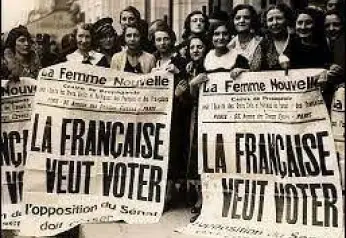
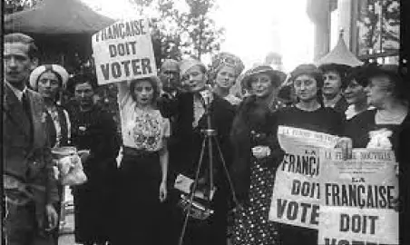
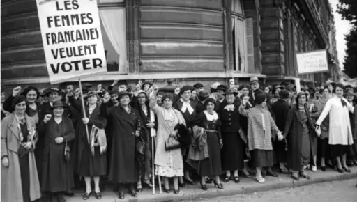
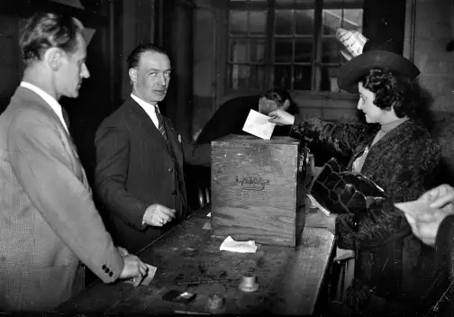
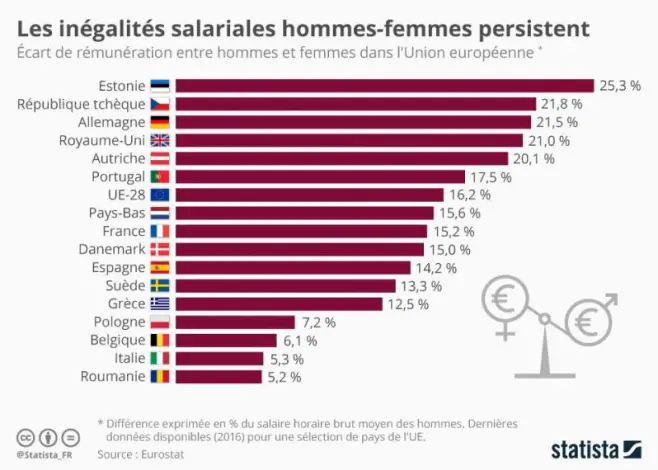

Le
féminisme
est un ensemble de mouvement qui ont pour but de promouvoir l’égalité entre homme et femme dans plusieurs domine comme (Culturelle, Politique, économique, Sociale et Juridique).
Le début de féminisme
Le féminisme a commencé vers le 18eme siècle le fameux siècle des Lumières où une écrivaine française Marie Gouze,
dite Olympe de Gouges, est considérée comme une des pionnières du féminisme en France.
Elle rédige la Déclaration des Droits de la Femme et de la Citoyenne dans laquelle elle demande que les femmes aient les
mêmes droits que les hommes.Cette demande va être refusée.
Marie Gouze, connu par le surnom Olypme de Gouges. Auteur de la Déclaration des droits de la femme et de la citoyenne
Mais le combat ne s’arrête pas là. Elles ont continué à résister pour leurs droits et en 1860,
la première vague féministe a commencé, des milliers de femmes sont sorties dans les rues pour réclamer leurs droits.
Cette vague a été bénéfique car à la suite de celle-ci, des droits comme celui du travail ou de vote ou encore
le droit d’éduquer leur ont été attribués.



Les femmes se battent pour avoir leur droit de vote en France
Le féminisme après la seconde guerre mondiale
Après la seconde guerre mondial les femmes ont commencé à obtenir de plus en plus de droits comme le droit de vote en 1944 en France,
appliqué dès 1945. En Italie et en Espagne les femme obtiennent leur droit de vote 1ans plus tard à la différence qu’en Espagne seules les femmes mariées avaient le droit de voter. ,
et pour la Belgique c’est en 1948 , donc on peut voir que les femme commencé à avoir de plus en plus de droite.

Femme vote pour la première fois en 1945 en France
Au niveau de l’éduction, la premier femme à avoir eu le Bac en France était Julie-Victoire Daubié en 1861.
Julie-Victoire Daubie est la premier femme à avoir le Bac français
Au niveau du travail les femmes ont commencé à travailler en 1848 en France. Cependant, leur salaire était très inférieur à
celui des hommes. c’est pour cela qu’en France,
une loi a été votée en 1972 qui oblige l’égalité des salaires entre les femmes et les hommes.
Au niveau européen il y a aussi des inégalités de salaires entre les hommes et les femmes . Les femmes touchent en moyenne un salaire
inférieur de 16% à ceux des hommes en Europe. Plus exactement, il y a un écart de 21% en Allemagne et en République tchèque,
tandis que pour la France, les Pays-Bas et l’Espagne, les femmes gagnent en moyenne 15,4% moins que les hommes.
L’Italie et la Roumanie sont les pays où les inégalitéd salariales sont les plus faibles, respectivement de 5,3% et 5,2%.

Un diagramme qui montre les inégalités des salaires entre les femmes et les hommes
Le féminisme aujourd’hui
Aujourd’hui il y a encore des mouvement féminisme, car les femmes sont encore discriminées en Europe. Comme par exemple au niveau des salaire,
elles gagne en moyenne 16 % mois que les hommes. Alors que si on regarde la France on peut voir que dans leur texte de loi il y a une loi qui oblige l’égalité des salaires entre les deux sexes.
Et si on regarde les statistiques on va voir qu’en moyenne les femmes gagne 15,1% moins que les hommes. Donc tout cela nous montre que les femmes en 21e me siècle sont encor discriminée.
Frise
1791
Déclaration des droits de la femme et de la citoyenne